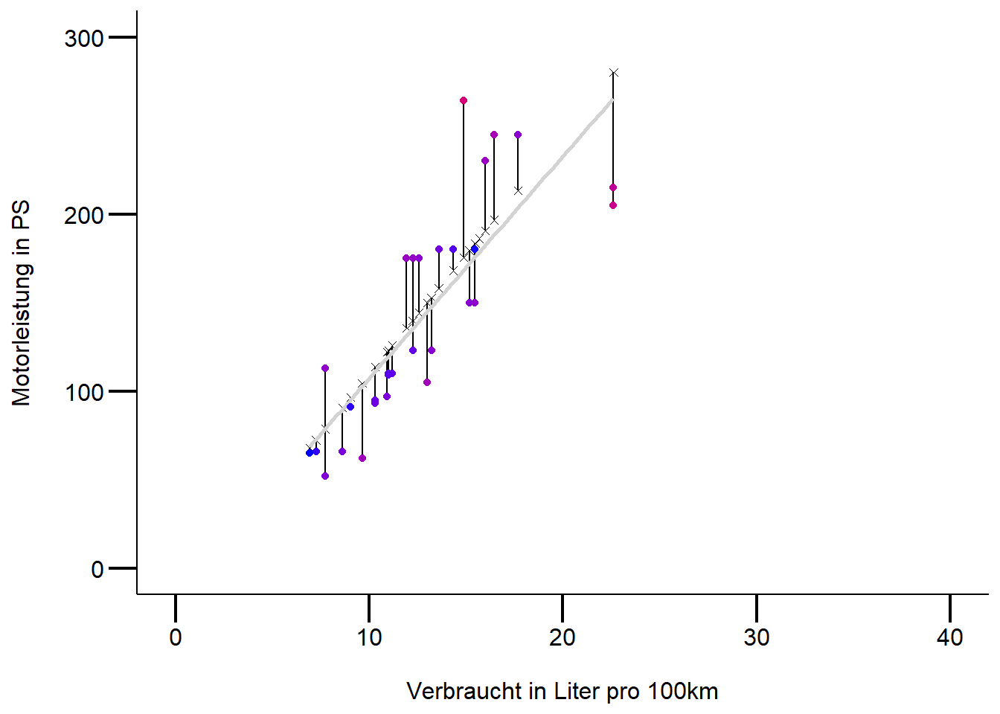

# für mehr infos
# https://stat.ethz.ch/R-manual/R-devel/library/datasets/html/mtcars.html
cars <- mtcars |>
mutate(cyl = as.factor(cyl)) |>
slice(-31) # lösch die 31ste Zeile
# Alternativ ginge auch das
cars[-31, ]
# schaue daten zuerst mal an
# 1. Responsevariable
hist(cars$hp) # nur sinnvoll bei grossem n
boxplot(cars$hp)
# 2. Responsevariable ~ Prediktorvariable
table(cars$cyl) # mögliches probel, da n's unterschiedlich gross
boxplot(cars$hp ~ cars$cyl) # varianzheterogentität weniger das problem,
# aber normalverteilung der residuen problematisch
# definiere das modell für eine ein-faktorielle anova
aov.1 <- aov(log10(hp) ~ cyl, data = cars)
# 3. Schaue Modelgüte an
par(mfrow = c(2, 2))
plot(aov.1)
# 4. Schaue output an und ordne es ein
summary.lm(aov.1)
# 5. bei meheren Kategorien wende einen post-hoc Vergleichstest an
TukeyHSD(aov.1)
# 6. Ergebnisse passend darstellen
library("multcomp")
# erstens die signifikanten Unterschiede mit Buchstaben versehen
letters <- multcomp::cld(multcomp::glht(aov.1, linfct = multcomp::mcp(cyl = "Tukey"))) # Achtung die kategoriale
# Variable (unsere unabhängige Variable "cyl") muss als Faktor
# definiert sein z.B. as.factor()
# einfachere Variante
boxplot(hp ~ cyl, data = cars)
mtext(letters$mcletters$Letters, at = 1:3)
# schönere Variante :)
ggplot(cars, aes(x = cyl, y = hp)) +
stat_boxplot(geom = "errorbar", width = .5) +
geom_boxplot(size = 1) +
annotate("text", x = 1, y = 350, label = "a", size = 7) +
annotate("text", x = 2, y = 350, label = "b", size = 7) +
annotate("text", x = 3, y = 350, label = "c", size = 7) +
labs(x = "\nAnzahl Zylinder", y = "Pferdestärke") +
mytheme
# Plot exportieren
ggsave(
filename = "statKons/distill-preview.png",
device = "png"
) # hier kann man festlegen, was für ein Bildformat
# exportiert werden möchte
# Sind die Voraussetzungen für eine Anova verletzt, überprüfe alternative
# nicht-parametische Tests z.B. oneway-Test mit Welch-korrektur für ungleiche
# Varianzen (Achtung auch dieser Test hat Voraussetzungen -> siehe Skript XY)
library("rosetta")
welch1 <- oneway.test(hp ~ cyl, data = cars, var.equal = FALSE)
rosetta::posthocTGH(cars$hp, cars$cyl, method = "games-howell")StatKons3: Demo
- Download dieses Demoscript via “</>Code” (oben rechts)
Einfaktorielle ANOVA
Mehrfaktorielle ANOVA

##
## Call:
## aov(formula = hp ~ cyl * am + wt, data = cars)
##
## Residuals:
## Min 1Q Median 3Q Max
## -33.834 -14.280 -7.418 7.120 60.282
##
## Coefficients:
## Estimate Std. Error t value Pr(>|t|)
## (Intercept) 32.743 31.636 1.035 0.310980
## cyl6 22.556 20.859 1.081 0.290274
## cyl8 88.818 20.463 4.340 0.000222 ***
## am 13.002 19.952 0.652 0.520811
## wt 17.691 9.409 1.880 0.072272 .
## cyl6:am 14.626 27.392 0.534 0.598276
## cyl8:am 73.356 33.194 2.210 0.036894 *
## ---
## Signif. codes: 0 '***' 0.001 '**' 0.01 '*' 0.05 '.' 0.1 ' ' 1
##
## Residual standard error: 26.73 on 24 degrees of freedom
## Multiple R-squared: 0.8428, Adjusted R-squared: 0.8035
## F-statistic: 21.45 on 6 and 24 DF, p-value: 1.511e-08Einfache Regression
# inspiriert von Simon Jackson: http s://drsimonj.svbtle.com/visualising-residuals
cars <- mtcars |>
# ändere die unabhängige Variable mpg in 100Km/L
mutate(kml = (235.214583 / mpg)) # mehr Infos hier: https://www.asknumbers.com/mpg-to-L100km.aspx
# |> # klone data set
# slice(-31) # # lösche Maserrati und schaue nochmals Modelfit an
#############
## 1.Daten anschauen
############
# Zusammenhang mal anschauen
# Achtung kml = 100km pro Liter
plot(hp ~ kml, data = cars)
# Responsevariable anschauen
boxplot(cars$hp)
# Korrelationen uv + av anschauen
# Reihenfolge spielt hier keine Rolle, wieso?
cor(cars$kml, cars$hp) # hängen stark zusammen
## [1] 0.7629477
###################
# 2. Modell definieren: einfache regression
##################
model <- lm(hp ~ kml, data = cars)
summary.lm(model)
##
## Call:
## lm(formula = hp ~ kml, data = cars)
##
## Residuals:
## Min 1Q Median 3Q Max
## -75.22 -25.52 -13.31 30.92 148.69
##
## Coefficients:
## Estimate Std. Error t value Pr(>|t|)
## (Intercept) -26.021 27.880 -0.933 0.358
## kml 13.540 2.095 6.464 3.84e-07 ***
## ---
## Signif. codes: 0 '***' 0.001 '**' 0.01 '*' 0.05 '.' 0.1 ' ' 1
##
## Residual standard error: 45.06 on 30 degrees of freedom
## Multiple R-squared: 0.5821, Adjusted R-squared: 0.5682
## F-statistic: 41.79 on 1 and 30 DF, p-value: 3.839e-07
###############
# 3.Modeldiagnostik und ggf. Anpassungen ans Modell oder ähnliches
###############
# semi schöne Ergebnisse
library("ggfortify")
## Error in library("ggfortify"): there is no package called 'ggfortify'
ggplot2::autoplot(model) + mytheme # gitb einige Extremwerte => was tun? (Eingabe/Einlesen
## Error in `ggplot2::autoplot()`:
## ! Objects of class <lm> are not supported by autoplot.
## ℹ have you loaded the required package?
# überprüfen, Transformation, Extremwerte nur ausschliessen mit guter Begründung)
# erzeuge vorhergesagte Werte und Residualwerte
cars$predicted <- predict(model) # bilde neue Variable mit geschätzten y-Werten
cars$residuals <- residuals(model)
# schaue es dir an, sieht man gut was die Residuen sind
d <- cars |>
dplyr::select(hp, kml, predicted, residuals)
# schauen wir es uns an
head(d, 4)
## hp kml predicted residuals
## Mazda RX4 110 11.20069 125.6411 -15.64107
## Mazda RX4 Wag 110 11.20069 125.6411 -15.64107
## Datsun 710 93 10.31643 113.6678 -20.66776
## Hornet 4 Drive 110 10.99134 122.8063 -12.80626
# visualisiere residuen
ggplot(d, aes(x = kml, y = hp)) +
# verbinde beobachtete werte mit vorausgesagte werte
geom_segment(aes(xend = kml, yend = predicted)) +
geom_point() + # Plot the actual points
geom_point(aes(y = predicted), shape = 4) + # plot geschätzten y-Werten
# geom_line(aes(y = predicted), color = "lightgrey") # alternativ code
geom_smooth(method = "lm", se = FALSE, color = "lightgrey") +
# Farbe wird hier zu den redisuen gemapped, abs(residuals) wegen negativen zahlen
geom_point(aes(color = abs(residuals))) +
# Colors to use here (für mehrere farben verwende color_gradient2)
scale_color_continuous(low = "blue", high = "red") +
scale_x_continuous(limits = c(0, 40)) +
scale_y_continuous(limits = c(0, 300)) +
guides(color = "none") + # Color legende entfernen
labs(x = "\nVerbraucht in Liter pro 100km", y = "Motorleistung in PS\n") +
mytheme
##########
# 4. plotte Ergebnis
##########
ggplot(d, aes(x = kml, y = hp)) +
geom_point(size = 4) +
# geom_point(aes(y = predicted), shape = 1, size = 4) +
# plot regression line
geom_smooth(method = "lm", se = FALSE, color = "lightgrey") +
# intercept
geom_line(aes(y = mean(hp)), color = "blue") +
mytheme
Multiple Regression
# Select data
cars <- mtcars |>
slice(-31) |>
mutate(kml = (235.214583 / mpg)) |>
dplyr::select(kml, hp, wt, disp)
################
# 1. Multikollinearitüt überprüfen
# Korrelation zwischen Prädiktoren kleiner .7
cor <- cor(cars[, -2])
cor[abs(cor) < 0.7] <- 0
cor #
## kml wt disp
## kml 1.0000000 0.8912658 0.8786238
## wt 0.8912658 1.0000000 0.8878515
## disp 0.8786238 0.8878515 1.0000000
##### info zu Variablen
# wt = gewicht
# disp = hubraum
###############
# 2. Responsevariable + Kriteriumsvariable anschauen
##############
# was würdet ihr tun?
############
# 3. Definiere das Model
############
model1 <- lm(hp ~ kml + wt + disp, data = cars)
model2 <- lm(hp ~ kml + wt, data = cars)
model3 <- lm(log10(hp) ~ kml + wt, data = cars)
#############
# 4. Modeldiagnostik
############
ggplot2::autoplot(model1)
## Error in `ggplot2::autoplot()`:
## ! Objects of class <lm> are not supported by autoplot.
## ℹ have you loaded the required package?
ggplot2::autoplot(model2) # besser, immernoch nicht ok => transformation? vgl. model3
## Error in `ggplot2::autoplot()`:
## ! Objects of class <lm> are not supported by autoplot.
## ℹ have you loaded the required package?
ggplot2::autoplot(model3)
## Error in `ggplot2::autoplot()`:
## ! Objects of class <lm> are not supported by autoplot.
## ℹ have you loaded the required package?
############
# 5. Modellfit vorhersagen: wie gut sagt mein Modell meine Daten vorher
############
# es gibt 3 Mögliche Wege
# gebe dir predicted values aus für model2 (für vorzeigebeispiel einfacher :)
# gibts unterschidliche varianten die predicted values zu berechnen
# 1. default funktion predict(model) verwenden
cars$predicted <- predict(model2)
# 2. datensatz selber zusammenstellen (nicht empfohlen): wichtig, die
# prädiktoren müssen denselben
# namen haben wie im Model
# besser mit Traindata von Beginn an mehr Infos hier: https://www.r-bloggers.com/using-linear-regression-to-predict-energy-output-of-a-power-plant/
new.data <- tibble(
kml = sample(seq(6.9384, 22.61, .3), 31),
wt = sample(seq(1.513, 5.424, 0.01), 31),
disp = sample(seq(71.1, 472.0, .1), 31)
)
cars$predicted_own <- predict(model2, newdata = new.data)
# 3. train_test_split durchführen (empfohlen) muss jedoch von beginn an bereits
# gemacht werden - Logik findet ihr hier: https://towardsdatascience.com/train-test-split-and-cross-validation-in-python-80b61beca4b6 oder https://towardsdatascience.com/6-amateur-mistakes-ive-made-working-with-train-test-splits-916fabb421bb
# beispiel hier: https://ijlyttle.github.io/model_cv_selection.html
cars <- mtcars |>
mutate(id = row_number()) |> # für das mergen der Datensätze
mutate(kml = (235.214583 / mpg)) |>
dplyr::select(kml, hp, wt, disp, id)
train_data <- cars |>
dplyr::sample_frac(.75) # für das Modellfitting
test_data <- dplyr::anti_join(cars, train_data, by = "id") # für den Test mit predict
# erstelle das Modell und "trainiere" es auf den train Datensatz
model2_train <- lm(hp ~ kml + wt, data = train_data)
# mit dem "neuen" Datensatz wird das Model überprüft ob guter Modelfit
train_data$predicted_test <- predict(model2_train, newdata = test_data)
# Residuen
train_data$residuals <- residuals(model2_train)
head(train_data)
## kml hp wt disp id predicted_test residuals
## Ferrari Dino 11.939827 175 2.770 145.0 30 127.7212 30.03376
## Toyota Corolla 6.938483 65 1.835 71.1 20 232.0765 16.06351
## Chrysler Imperial 16.000992 230 5.345 440.0 17 143.2543 29.85329
## Lotus Europa 7.737322 113 1.513 95.1 28 168.6052 42.80742
## Volvo 142E 10.991336 109 2.780 121.0 32 343.8964 -15.40264
## Hornet Sportabout 12.578320 175 3.440 360.0 5 341.7118 24.68744
# weiterführende Infos zu "machine learning" Idee hier: https://stat-ata-asu.github.io/MachineLearningToolbox/regression-models-fitting-them-and-evaluating-their-performance.html
# wichtigstes Packet in dieser Hinsicht ist "caret": https://topepo.github.io/caret/
# beste Philosophie ist tidymodels: https://www.tidymodels.org
#----------------
# Schnelle variante mit broom
d <- lm(hp ~ kml + wt + disp, data = cars) |>
broom::augment()
head(d)
## # A tibble: 6 × 11
## .rownames hp kml wt disp .fitted .resid .hat .sigma .cooksd
## <chr> <dbl> <dbl> <dbl> <dbl> <dbl> <dbl> <dbl> <dbl> <dbl>
## 1 Mazda RX4 110 11.2 2.62 160 123. -12.7 0.0478 41.4 1.29e-3
## 2 Mazda RX4 Wag 110 11.2 2.88 160 114. -4.21 0.0456 41.4 1.34e-4
## 3 Datsun 710 93 10.3 2.32 108 103. -9.87 0.0758 41.4 1.31e-3
## 4 Hornet 4 Drive 110 11.0 3.22 258 142. -31.6 0.0958 41.0 1.77e-2
## 5 Hornet Sportabout 175 12.6 3.44 360 191. -16.3 0.210 41.3 1.35e-2
## 6 Valiant 105 13.0 3.46 225 138. -33.5 0.0445 40.9 8.22e-3
## # ℹ 1 more variable: .std.resid <dbl>
ggplot(d, aes(x = kml, y = hp)) +
geom_segment(aes(xend = kml, yend = .fitted), alpha = .2) +
geom_point(aes(color = .resid)) +
scale_color_gradient2(low = "blue", mid = "white", high = "red") +
guides(color = "none") +
geom_point(aes(y = .fitted), shape = 4) +
scale_y_continuous(limits = c(0, 350)) +
geom_smooth(method = "lm", se = FALSE, color = "lightgrey") +
mytheme
############
# 6. Modellvereinfachung
############
# Varianzpartitionierung
library("hier.part")
## Error in library("hier.part"): there is no package called 'hier.part'
cars <- mtcars |>
mutate(kml = (235.214583 / mpg)) |>
select(-mpg)
names(cars) # finde "position" deiner Responsevariable
## [1] "cyl" "disp" "hp" "drat" "wt" "qsec" "vs" "am" "gear" "carb"
## [11] "kml"
X = cars[, -3] # definiere all die Prädiktorvariablen im Model (minus Responsevar)
# dauert ein paar sekunden
hier.part(cars$hp, X, gof = "Rsqu")
## Error in hier.part(cars$hp, X, gof = "Rsqu"): could not find function "hier.part"
# alle Modelle miteinander vergleichen mit dredge Befehl: geht nur bis
# maximal 15 Variablen
model2 <- lm(hp ~ ., data = cars)
library("MuMIn")
## Error in library("MuMIn"): there is no package called 'MuMIn'
options(na.action = "na.fail")
allmodels <- dredge(model2)
## Error in dredge(model2): could not find function "dredge"
head(allmodels)
## Error in eval(expr, envir, enclos): object 'allmodels' not found
# Wichtigkeit der Prädiktoren
MuMIn::importance(allmodels)
## Error in loadNamespace(x): there is no package called 'MuMIn'
# mittleres Model
avgmodel <- MuMIn::model.avg(get.models(allmodels, subset = TRUE))
## Error in loadNamespace(x): there is no package called 'MuMIn'
summary(avgmodel)
## Error in eval(expr, envir, enclos): object 'avgmodel' not found
# adäquatest model gemäss multimodel inference
model_ad <- lm(hp ~ carb + disp + wt, data = mtcars)
summary(model_ad)
##
## Call:
## lm(formula = hp ~ carb + disp + wt, data = mtcars)
##
## Residuals:
## Min 1Q Median 3Q Max
## -45.225 -14.235 3.879 20.621 39.785
##
## Coefficients:
## Estimate Std. Error t value Pr(>|t|)
## (Intercept) 53.16715 18.16036 2.928 0.00671 **
## carb 23.57691 2.99391 7.875 1.41e-08 ***
## disp 0.51663 0.07669 6.736 2.59e-07 ***
## wt -28.59214 9.87292 -2.896 0.00725 **
## ---
## Signif. codes: 0 '***' 0.001 '**' 0.01 '*' 0.05 '.' 0.1 ' ' 1
##
## Residual standard error: 24.32 on 28 degrees of freedom
## Multiple R-squared: 0.8863, Adjusted R-squared: 0.8742
## F-statistic: 72.78 on 3 and 28 DF, p-value: 2.462e-13